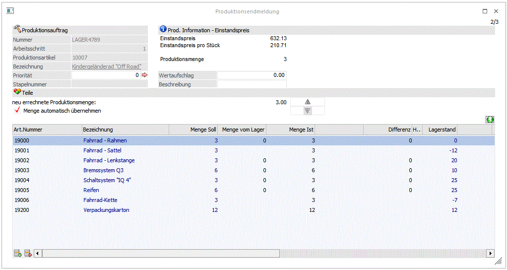
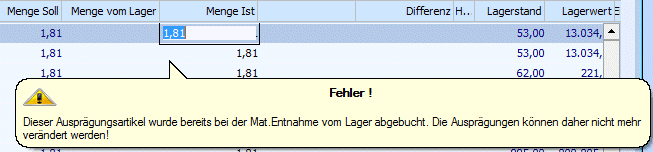
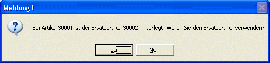

Im 2. Schritt werden die Materialien erfasst, die für die Produktion verwendet wurden. Im oberen linken Bereich des Fensters werden die Informationen (Nummer und Arbeitsschritt) des aufgerufenen Projektes angezeigt. Darunter werden die Informationen
Ø Produktionsartikel
und
Ø Bezeichnung
angezeigt. Durch einen Klick auf die Bezeichnung kann eine Drill-Down-Funktion ausgelöst werden. Welche Aktion dabei ausgelöst wird, kann über die rechte Maustaste festgelegt werden (die letzte Einstellung wird gespeichert), wobei folgende Optionen zur Verfügung stehen:
ü Aufruf Info
Es wird der Artikel
in der Artikelinfo im Programm WinLine INFO geöffnet.
ü Artikelstamm
Der Artikel wird
in der WinLine FAKT im Artikelstamm geöffnet.
ü Statistik
Es wird die
Artikelstatistik in der WinLine FAKT geöffnet.
ü Artikelbedarfsvorschau
Es wird
die Artikelbedarfsvorschau des Produktionsartikels angezeigt.
Auf der rechten Seite wird der Bereich
Ø Prod. Information - Einstandspreis
angezeigt, wo der Einstandspreis des Projektes und der Einstandspreis pro Stück angezeigt wird. Darunter wird noch die Produktionsmenge angezeigt.
Dieser Infobereich ist ein Formular und kann nach den individuellen Bedürfnissen angepasst werden.

Ø Wertaufschlag
Dieses Feld steht nur zur Verfügung wenn die Lizenz "Fremdfertigung Produktion" im System hinterlegt ist.
Das Feld wird automatisch mit dem Belegwert aus einer entsprechenden Fremdfertiger(Lieferanten)-Bestellung befüllt. Der Betrag stellt der Fremdfertigungs-Rechnungsbetrag welcher in Folge auf den Produktionsartikel-Wert aufgeschlagen werden soll. Somit setzt sich der fremdgefertigte Produktionsartikelwert aus der Summe der Materialien, der Summe etwaiger Ressourcen/Tätigkeiten und diesem Wertaufschlag zusammen.
Sollte es bei einem fremdzufertigenden Arbeitsschritt keinen Lieferantenbeleg (mehr) geben, wird hier der allgemeine Einkaufspreis aus dem Artikelstamm vorgeschlagen.
Wenn eine Lizenz "Fremdfertigung Produktion" vorhanden ist, kann ein Wertaufschlag auch bei nicht fremdzufertigenden Arbeitsschritten erfasst werden. Ein Wert wird allerdings nicht automatisch vorgeschlagen, da keine Fremdfertiger-Bestellung mit dem Arbeitsschritt verbunden ist.
Ø Wertaufschlag-Beschreibung
Dieses Feld steht nur zur Verfügung wenn die Lizenz "Fremdfertigung Produktions" im System hinterlegt ist.
Eine Beschreibung für den Wertaufschlag kann in diesem Feld vom Benutzer erfasst werden. Das Feld steht auch für nicht fremdzufertigende Arbeitsschritte zur Verfügung, wenn die Lizenz "Fremdfertigung Produktion" im System hinterlegt ist.
Im Bereich Teile können nun folgende Eingaben vorgenommen werden:
Ø Neue errechnete Produktionsmenge
Werden die IST-Mengen der verbrauchten Ressourcen in der Tabelle reduziert, errechnet sich das Programm die sich daraus ergebende, wahrscheinliche Menge an Fertigprodukten. Diese neu errechnete Produktionsmenge wird rechts daneben als Information angezeigt. Durch Drücken der Taste wird diese Menge in die obere Tabelle in das Feld Menge zu produzieren übernommen.
Achtung
Das hat nichts mit einem Istverbrauch unter Plan zu tun. Diese Funktion löst letztlich eine Teilproduktion aus und errechnet die Höhe der "Menge zu produzieren".
Liegt der Istverbrauch unter dem Planverbrauch und konnte trotzdem die geplante Menge an Fertigprodukten hergestellt werden, dann ist die Taste zur Übernahme nicht zu drücken.
Ebenso kann die zu produzierende Menge editiert und mit der Taste in die untere Tabelle übernommen werden. Dadurch wird ebenfalls nur eine Teilproduktion ausgelöst. Nur wenn die Checkbox "erledigt" aktiviert wurde, wird das Projekt trotz reduzierter Menge abgeschlossen. Ist die Checkbox "Menge automatisch übernehmen" aktiviert, so wird diese Menge automatisch in die untere Tabelle übernommen, ohne dass die Übernahme-Taste gedrückt werden muss.
Ø Artikelnummer
Anzeige der Artikelnummer lt. Stückliste.
Ø Artikelbezeichnung
Informationsfeld, dass die Bezeichnung des Artikels beinhaltet.
Ø Menge Soll
Anzeige der geplanten Menge lt. Stückliste. In dieser Menge werden ggf. im Stücklistenstamm definierte Ausschüsse mit berücksichtigt.
Ø Menge vom Lager
Hier kann - wenn es sich bei dem Artikel um einen weiteren Produktionsartikel handelt - die Menge eingegeben werden, die vom Lager genommen wird. Wird hier eine Menge eingetragen, dann wird diese Menge nicht nochmals produziert (mit allen Komponenten vom Lager abgebucht).
Ø Menge Ist (Menge in ...)
Eingabe der tatsächlich verbrauchten Menge. Diese Menge wird vom Lager abgebucht und für die Einstandspreisberechnung des Fertigproduktes herangezogen. Wird der Artikel in 2 Mengen geführt, wird hier die Mengeneinheit 1 hinterlegt, wobei in der Überschrift der Spalte auch die entsprechende Mengeneinheit angezeigt wird.
Hinweis
Wenn Ausprägungsartikel bei einem Arbeitsschritt vorher teilentnommen wurden, können bei der Endmeldung nur diese Ausprägungen verwendet werden. Bei einem Klick auf das IST-Mengenfeld vom Ausprägungsartikel erscheint daher die Meldung:

Es kann daher nur der schon entnommene (und abgebuchte) Ausprägungsartikel für die Endmeldung verwendet werden. Das Fenster "Ausprägungen erfassen" öffnet sich nicht in diesem Fall, um z.B. eine andere Ausprägung auswählen zu können.
Ø Menge in ...
Wenn der Artikel in 2 Mengen geführt wird, kann hier die Menge 2 (die Mengeneinheit wird in der Überschrift angezeigt) eingegeben bzw. verändert werden.
Ø Materialentnahmemenge (nicht verbraucht)
In dieser Spalte werden angezeigt wie viele Stück bereits durch eine Materialentnahme vom Lager entnommen worden sind aber noch nicht im Rahmen einer Teilendmeldung verbraucht wurden.
Ø Differenz
Hier wird die errechnete Differenz zwischen der "Menge Soll" und der "Menge Ist" ausgewiesen.
Ø Lagerstand
Anzeige des aktuellen Lagerstandes des Artikels.
Ø Lagerstand in Menge 2
Anzeige des aktuellen Lagerstandes des Artikels in der Menge 2, wenn der Artikel mit 2 Mengen geführt wird.
Ø Lagerwert
Anzeige des aktuellen Lagerwertes des Artikels.
Ø Einstandspreis
Anzeige des aktuellen Einstandspreises des Teils/Rohstoffes. Der Einstandspreis ergibt sich aus der Division Lagerwert/Lagestand.
Ø Info-Symbole
Wird bei einer Stücklisten-Komponente der Lagerstand unterschritten, so wird dies mit einem roten Warnzeichen angezeigt (). Betrifft dies eine Komponente aus einer Unterstückliste, so wird die Artikelnummer dieser Komponente angezeigt. Sollten mehrere Komponenten einer Unterstückliste nicht verfügbar sein, wird nur die erste angezeigt.
Wenn der Stückliste-Komponente vom Artikeltyp "Auftragsbezogene Produktion/Bestellung" bzw. "Bestellung mit Reservierung" ist, und entweder der Lagerstand unterschritten wird oder die erforderliche Menge nicht auf Lager für den Produktionsauftrag reserviert ist, so wird ein zusätzliches rotes Warnzeichen angezeigt ().
Ø Menge Ausschuss
Wurde im Stücklistenstamm eine Menge Ausschuss bzw. ein Ausschuss-% hinterlegt, wird hier die vom Programm errechnete Ausschussmenge vorgeschlagen. Die Menge kann ggf. noch verändert werden.
Ø Ausschuss %
In diesem Feld wird der Ausschuss % aus dem Stücklistenstamm angezeigt.
Ø Buchungsschlüssel
Nach Eingabe einer Ausschussmenge bzw. Ausschuss% kann in diesem Feld eine eigene Buchungsart eingegeben werden, mit der die Zeile gebucht werden soll. (nur möglich wenn der Teil nicht vorher beim Druck des Materialentnahmescheins abgebucht wurde).
Ø Buchungsschlüsselbezeichnung
Hier wird die Bezeichnung der Lagerbuchungsart angezeigt.
Ø Beschreibung
Nach Eingabe einer Ausschussmenge bzw. Ausschuss% kann hier noch eine zusätzliche Beschreibung (Ausschussgrund) zu der Zeile angegeben werden.
Ø Kontrollsumme
In diesem Feld wird die Summe eines Artikels angezeigt. Das Feld wird automatisch befüllt, wenn zu einem bereits bestehenden Artikel eine weitere Artikelzeile (mit der gleichen Artikelnummer) eingefügt wird.
Hinweis:
Bei der Endmeldung von Ausprägungen mit Poolnummern sieht man in diesem Schritt die Zuordnung der Artikeln zu den jeweiligen Poolnummern. Eine rotmarkierte Zeile kennzeichnet ein zwar im Vorfeld ausgeprägter Aritkel, der noch nicht eine Poolnummer zugeordnet wurde. Grünmarkierte Zeilen kennzeichnen Artikeln, die im Vorfeld ausgeprägt und einer Poolnummer zugeordnet sind. Mit einer Doppelklick auf einer Ziele öffnet sich das Ausprägungsfenster. Hier kann eine Ausprägung nochmals gewählt werden, die zu einer Poolnummer zugeordnet werden soll.
Buttons in der Tabelle
Ø Einfügen-Button
Mit diesem Button können neue Artikelzeilen eingefügt werden (wenn z.B. mehr Materialien benötigt wurden, als vorhergesehen und diese extra ausgewiesen werden sollen), wobei die neue Zeile unter der aktuellen Zeile eingefügt wird.
Hinweis:
Wenn ein Artikel mit Ersatzartikel hinzugefügt wird, wird - je nach Einstellung im Artikel - eine unterschiedliche Aktion ausgelöst:
Wenn im Artikelstamm im Feld
Ø autom. Ersatz
die Option
ü 0: nie automatisch ersetzen
hinterlegt ist, wird der Artikel ganz normal geöffnet und kann wie gewohnt bearbeitet werden.
Wenn im Artikelstamm im Feld
Ø autom. Ersatz
die Option
ü 1: immer automatisch ersetzen
eingestellt ist, wird automatisch der Ersatzartikel verwendet. Abhängig von der Einstellung im Feld
Ø Verwendung
wird dann der erste Artikel oder ggf. auch ein kaskadierter Artikel verwendet.
Wenn im Artikelstamm im Feld
Ø autom. Ersatz
die Option
ü 2: fragen
hinterlegt, dann wird eine Meldung angezeigt:

Wird die Meldung mit JA beantwortet, dann wird der Ersatzartikel geöffnet. Wird die Meldung mit NEIN beantwortet, dann wird der Artikel geöffnet, der ursprünglich eingegeben wurde.
Ø Entfernen-Button
Mit diesem Button können nur Zeilen entfernt werden, die zuvor auch eingefügt wurden. Zeilen aus dem Projekt (Stückliste) können hier nicht entfernt werden.
Ø Ohne Auswahl aufteilen
Mit diesem Button können in einem Vorgang alle Stücklistenteile im Arbeitsschritt (bzw. auch in eventuell vorhandenen Unterebenen) automatisch auf Ausprägungen bzw. auch Lagerorte aufgeteilt werden.
Ø Nächsten Artikel mit Ausprägung/Lagerort aufteilen
Mit diesem Button kann in der Stückliste nach dem nächsten nicht ausgeprägten Artikel gesucht werden. Dabei wird entwederdas Fenster "Ausprägungen erfassen" bzw. "Lagerorte erfassen" für diesen Artikel geöffnet, je nachdem, ob der Artikel mit Ausprägungen oder Lagerorte geführt wird. Es werden auch Stücklistenteile iin Unterebenen des aktuellen Arbeitsschrittes für das Aufteilen berücksichtigt.
Durch Anklicken des VOR-Buttons () gelangt man in den nächsten Schritt, wo die Komponenten eingegeben werden können.